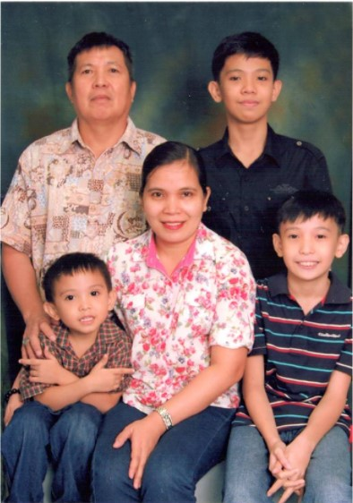
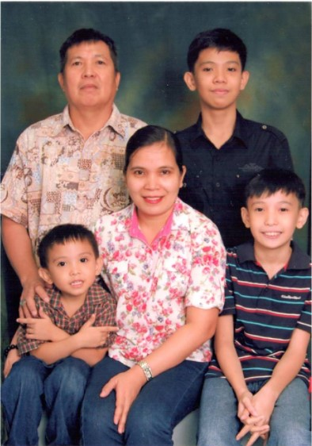
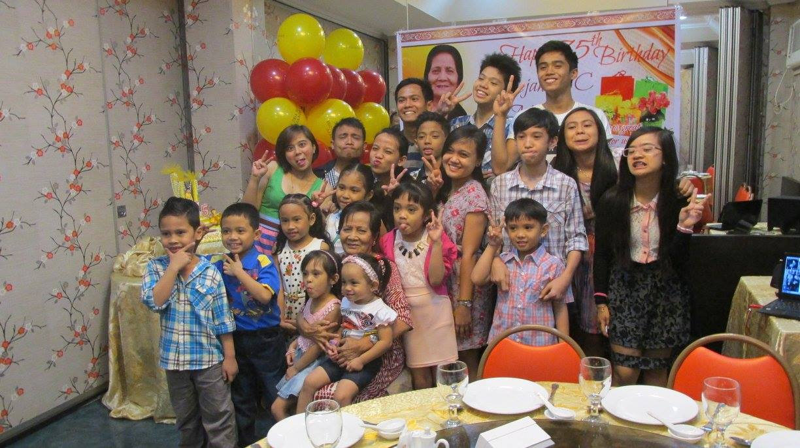
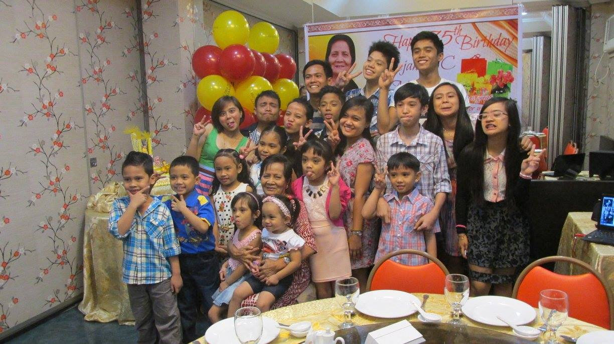

Im Lorenz Orozco My Childhood years are all about
being free and fun.[1]Free in doing everything and having Fun while doing it.[2] I remember when I
was a kid I used to wake up
every morning just so that I could play with my friends outside.[3] I remember every game I
played it’s called
text, pogs, etc.[4] I play non stop but my parents call me every time if it's lunch and if it's
afternoon so
that I can sleep.[5] They say that sleeping is really important, maybe that’s why I love sleeping
up to this
day so much.[6] I also remember I used to take vacation at my cousin's place.[7]It’s
every summer and I'm always excited to go there.
[8] I stay and sleep at their house for 1 week.[9] It’s fun and
memorable because we do a lot of
things like watching movies, wandering around their place, playing with their friends, and
etc.[10] We also went to our
province before and it’s so memorable because we went to the house of my relatives that I didn’t even know
who they were.[11]
I just knew them when we visited their place.[12] One of the things that we do in the province is
to go to the beach.[13] It's fun going
there because I like the sea.[14] Where we go in the morning and stay up to
afternoon.[15] We also wander the places in our province.[16]
It's fun because it’s an adventure for me.[17] I learned all about the place and
where some of my cousins live because when we took a
vacation we always stayed at my grandparents's house.[18] It’s so much fun
because it's all new for me.[19]. However when the vacation ends that is time to say goodbye.[20]
So that we can move forward and face another challege that will come to our life.[20] But I will never forget this memories that
I make with everyone because this memories makes me who I am today.[21]
"I didn’t realize we were making memories we just knew we were having fun"
 

 
